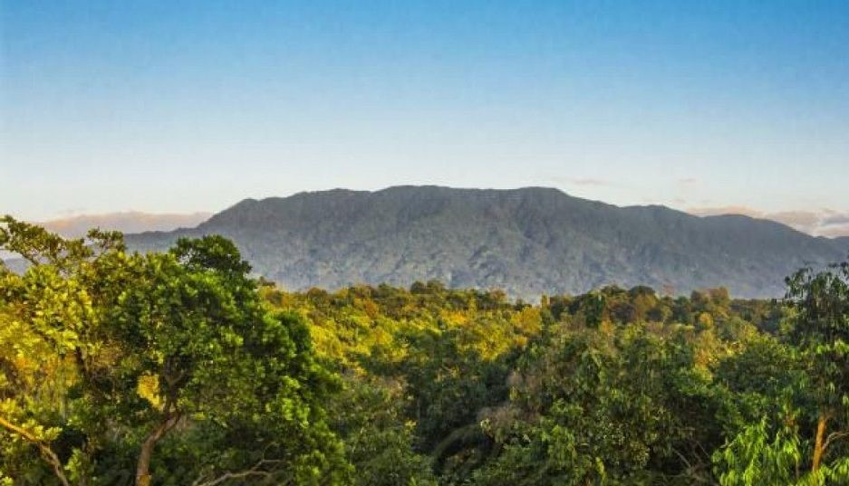
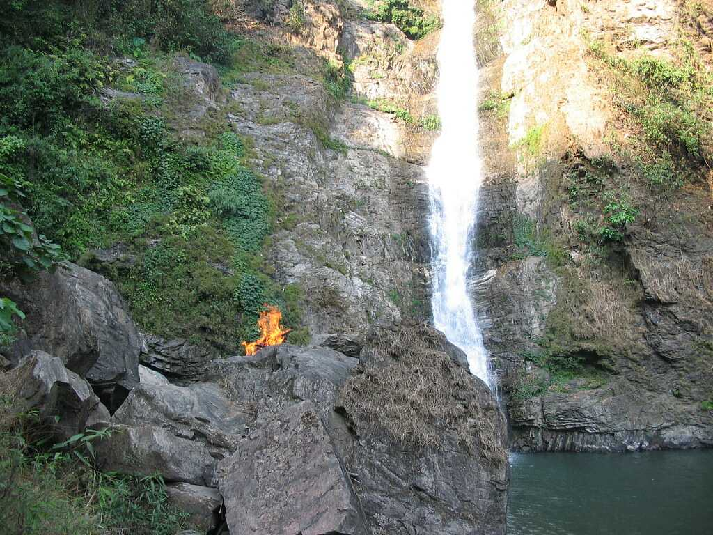

Hello Again !!
There are lots of places to visit in Tura, and if you're looking for one you're in the right place.
Tura Peak
A beautiful and majestic hill stands on the eastern side of Tura at a height of 872 m above sea level overlooking the town of Tura. Local legend has it that the peak provides a sacred shelter or abode to the ‘Gods’ and it is also claimed that Tura was traditionally known as Dura, but due to mispronunciation by the British gave it the present name of Tura. The Tura range has been declared a reserve forest with an observatory, a Cinchona plantation and a tourist bungalow located at its vicinity.
A magnificent view of the lower Brahmaputra valley as well as the golden yellow plains of Bangladesh can be seen all year round from the peak. A foot-track or path developed during the British Raj is still in existence and can be used by tourists and adventurers alike to reach Tura peak with ease and comfort.
Nokrek National Park
About 40 kms, via Asananggiri and Sasatgiri but just 2 kms. from Tura peak; teeming with wild life, Nokrek hill is the home of a very rare species of citrus locally known as Memang Narang orange of the spirits. This Memang Narang is considered to be the most primitive and progenitor of all other varieties of citrus plants in the world with a view to preserve this rare species of citrus indica the first gene sanctuary of the world has been established here.
The entire Biosphere Reserve is hilly. The rock is mainly gneisses, granulites, migmatites, amphibolites and banded iron formation, intruded by basis and ultra-basic bodies. In most of the Biosphere Reserve area the soil is red loam. But sometimes it varies from clayey to sandy loam. The soils in the Biosphere Reserve are rich in organic matter and nitrogen but deficient in phosphate and potash. The area consists of patchy sedimentary rock composed of pebble bed, sandstone, and carbonaceous shales.
All important rivers and streams of the Garo Hills region rise from the Nokrek Range, of which the river Simsang, known as Someshwari when it emerges into Bangladesh at Baghmara, is the most prominent.
Chibragre
Lying at the confluence of Ganol and Rongram rivers, just 9 kms from Tura on the Tura Guwahati road is an ideal picnic spot.
Rongbang dare
Is another attractive tourist spot in West Garo Hills which can be easily viewed from Tura-Williamnagar PWD Road and the roadside near Rongbang dare virtually becomes mini bazaar in recent years where the Garos can dispose off their agriculture products besides running their indigenous food and tea stalls.
Pelga Falls
Pelga falls located at the distance of 7 kms from Tura has become increasingly hot spot for anglers and picnickers in recent years. The tourism department developed this place by constructing a footpath and view point. A typical traditional Garo bamboo bridge constructed over Ganol river is another added attraction.
Hotels
Now for those who came from far places will need Hotels. So, here are some of the Hotels in Tura and the links for that particular Hotels are given.
Hotel Polo Orchid Tura
Located in Tura, Polo Orchid Hotel is at a distance of 202 km from Lokpriya Gopinath Bordoloi International Airport, 221 km from Guwahati Railway Station and 4.1 km from Tura Bus Station.
Hotel Sundare Tura
Hotel Sundare is situated at a distance of 0.1 km away from the Meghalaya Transport Corporation Bus Stand and 1 km from the Hawakhana Baptist Church. This hotel operates a 24-hour front desk. This 2 storey accommodation in Tura comprises 20 rooms. All the rooms are equipped with amenities such as attached bathrooms with hot and cold running water and bottled/drinking water.Hotel Sundare provides services such as laundry, power backup, and round-the-clock room services. Nearby tourist attractions in Turu include Rishi Para Kali Mandir (1 km), Hindu Temple (1 km), Dobasipara Baptist Church (2 km). Travel hubs around the hotel include Dhubri Railway Station (99 km) and Lokpriya Gopinath Bordoloi International Airport (198). The hotel also provides medical services.
Hotel Rikman Tura
Hotel Rikman is situated in the busy town of Tura, in the West Garo Hills of Meghalaya. Situated centrally, Hotel Rikman Continental has the best rooms of its kind in Tura. It is walking distance from the Bus stand, Taxi stand, Helipad and Shopping centers. The hotel is ideal for large gatherings like meetings, re-unions, weddings etc.
Dongrama Homestay
Dongrama Homestay, located at Lower Burny Hills near Nehru Park (Tura Ampati Road) 5-6 km away from the main town Tura, West Garo Hills District, is a quiet, serene and magnificent place for the people who love to spend quality time close to nature away from hustle and bustle. The compound is full of different kinds of plantation specially trees which makes the place wonderful, greenery with spacious lawns to walk around. The chirping sound of many different birds in the compound especially during morning and in the evening hours will definitely help you to feel calm, relax and soothing for the mind, body and soul. Dongrama offers well furnish modern rooms, spotless spacious bathrooms, separate dining area, exquisite local cuisine, big garden, two big open terraces and ample spaces for free parking.
Disclaimer
The above pictures and the descriptions are taken from the other sites and I claim no rights to the pictures. The links to the main sites are given below:
..Places to visit in Tura !!..Places to Visit in Tura !!